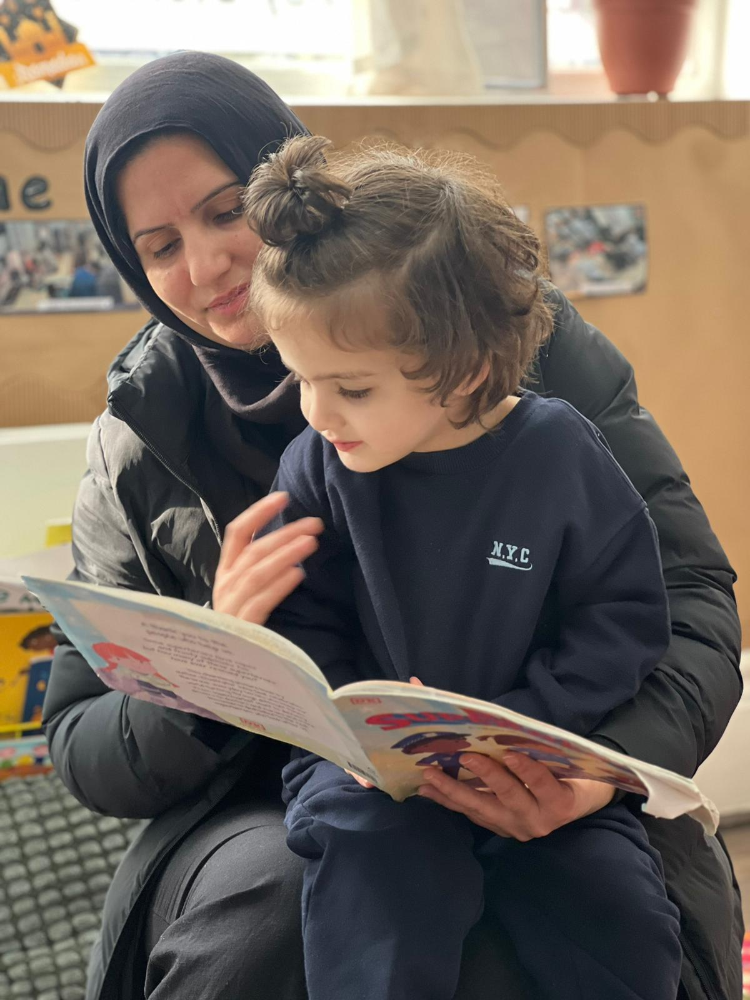
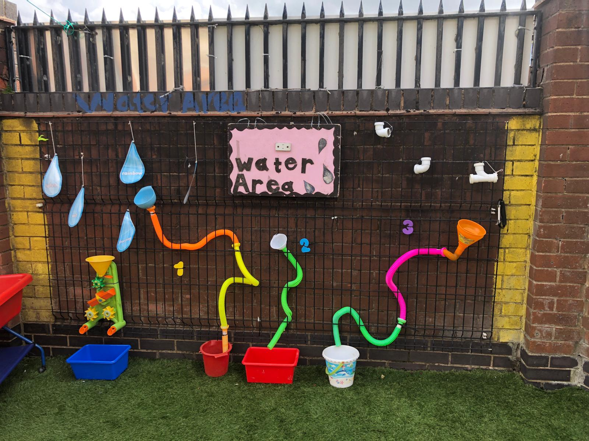
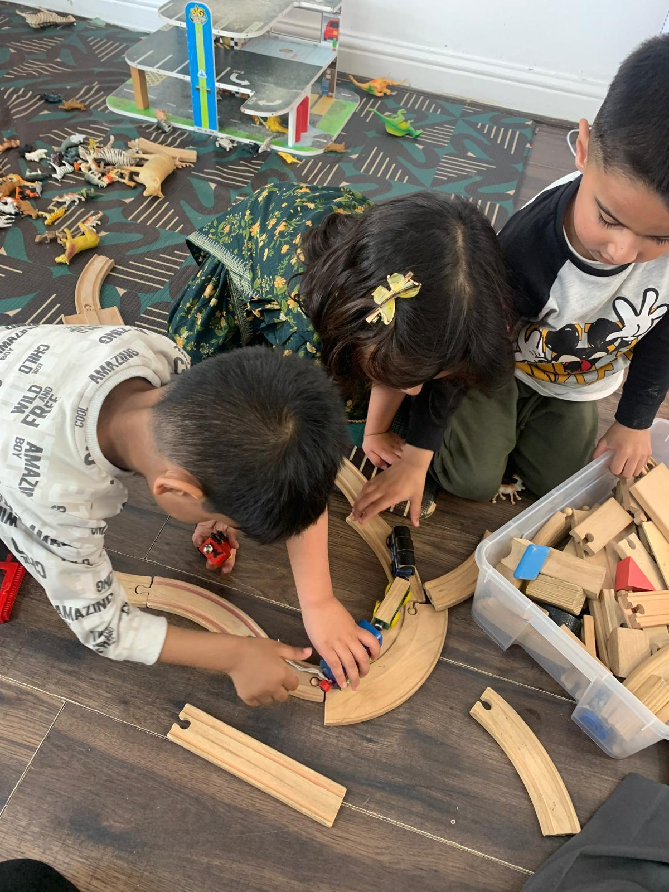
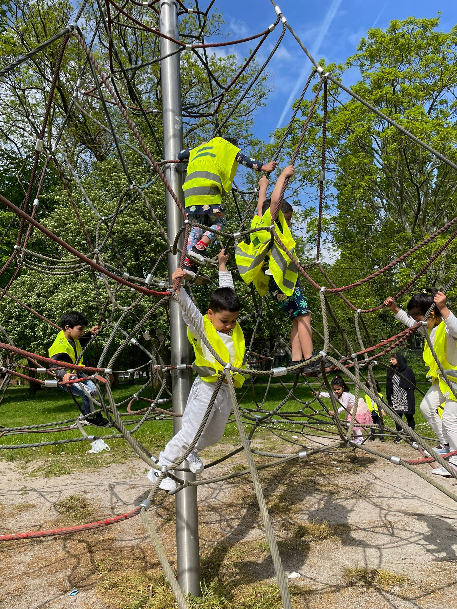
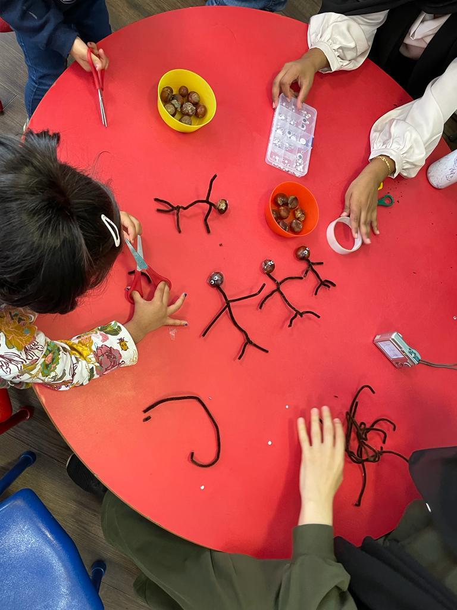
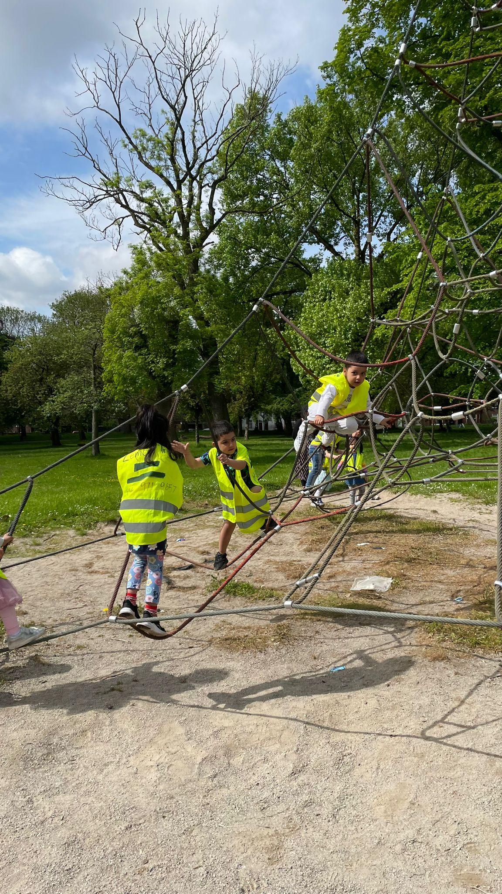
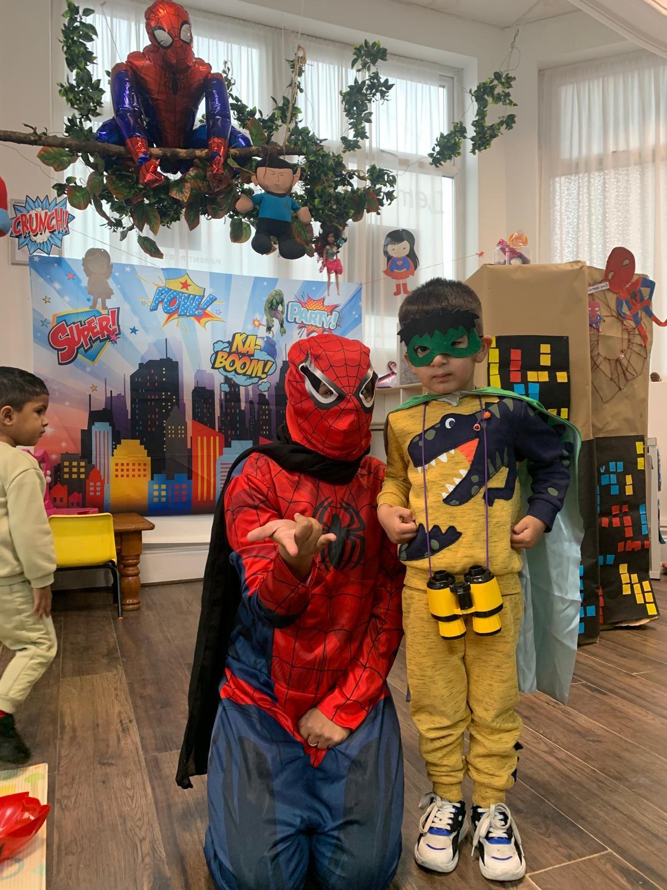
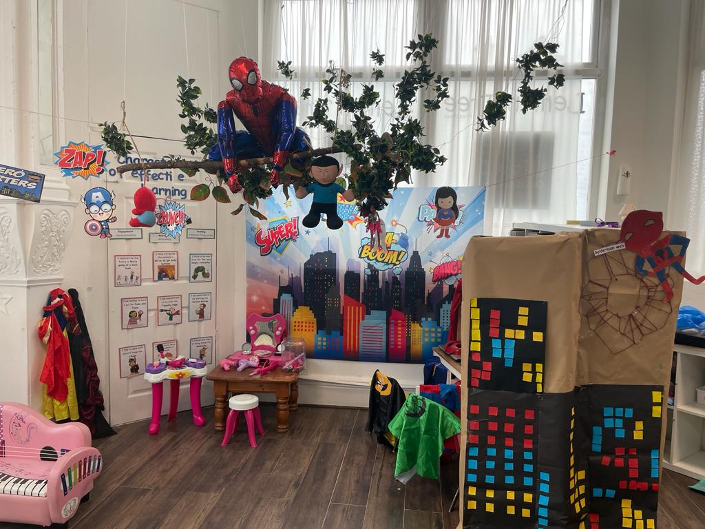
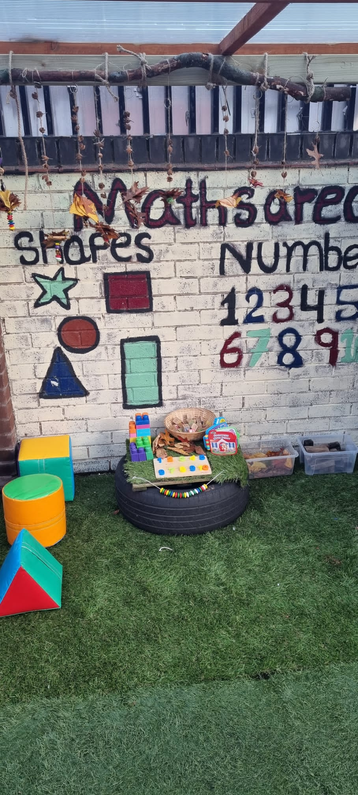
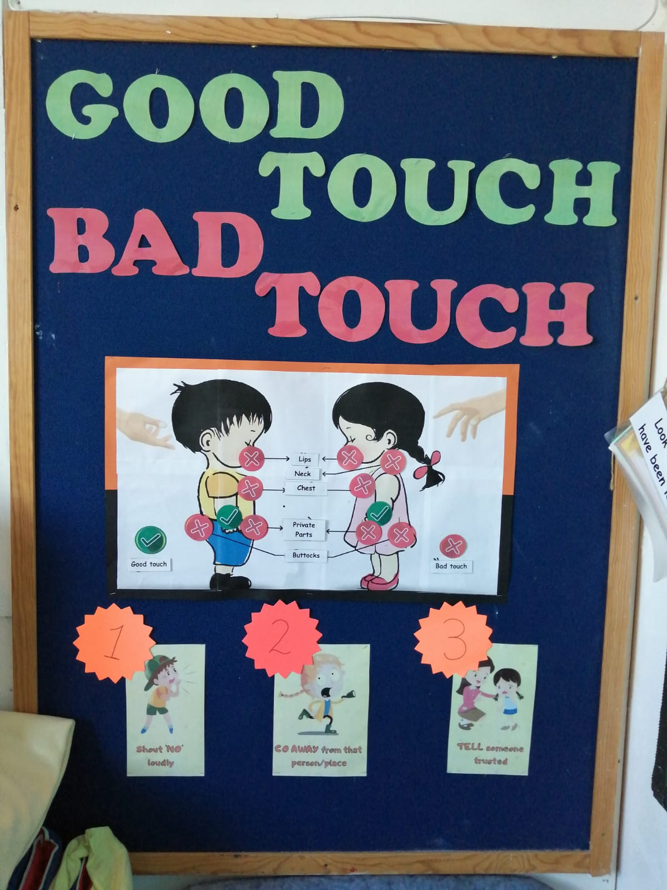

3 Oct 202610 School Readiness Tips to Prepare Your Child for Reception
Forget reading and writing for a second. What actually gets tested on day one of Reception is whether your child…
Read more54 friendly guides for parents on early years, play, settling in and school readiness.


3 Oct 2026Forget reading and writing for a second. What actually gets tested on day one of Reception is whether your child…
Read more 2 Oct 2026
2 Oct 2026
Yes. Lemon Tree runs on Montessori-style principles. A child picks their own activity from a shelf of purposefully chosen materials…
Read more 30 Sep 2026
30 Sep 2026
Lemon Tree, a preschool in the Crumpsall and Cheetham Hill area of Manchester, follows a Montessori-style approach to early learning…
Read more
29 Sep 2026Choosing between Montessori and a play-based preschool often depends on how your child learns. In a Montessori classroom, children usually…
Read more
28 Sep 2026Many parents only start thinking about their toddlers’ speech when they see a cousin or friend’s child the same age…
Read more 16 Sep 2026
16 Sep 2026
Choosing an early years setting means more than just picking a place near home. Parents look for a centre where…
Read more 28 Apr 2026
28 Apr 2026
Boost child language skills at home through daily talk, reading, singing, play-based learning, and patience. Improve toddler communication naturally…
Read more
20 Apr 2026Nursery vocabulary development explains how children learn words through play, stories, routines, and interaction, helping improve communication…
Read more 19 Apr 2026
19 Apr 2026
Child not talking yet? Learn the signs of speech delay, common causes, when to seek help, and how parents plus preschool support can improve early…
Read more
17 Apr 2026Nursery maths teaching helps children learn numbers, shapes, and problem-solving through play, daily routines, and parent support, building…
Read more11 Apr 2026
At Lemon Tree Preschool, early reading develops through play, stories, and EYFS-based learning, helping children build language, confidence, and…
Read more 10 Apr 2026
10 Apr 2026
Explains school readiness meaning, key child skills, emotional and social development, EYFS guidance, parent support tips, and how children naturally…
Read more 9 Apr 2026
9 Apr 2026
Messy play brain development helps children learn through hands-on sensory activities, building creativity, confidence, motor skills, and…
Read more 5 Apr 2026
5 Apr 2026
Learning through play helps children develop language, social, and physical skills. This guide explains how play-based learning works, supports…
Read more 30 Mar 2026
30 Mar 2026
What is the EYFS? How does it help my child’s development? Which EYFS learning areas are included? How do nurseries observe progress? How does Lemon…
Read more
30 Mar 2026Shy child confidence develops with gentle support. Learn how to help a quiet child socialize, build self-esteem, support emotional growth, and…
Read more
13 Mar 2026Separation anxiety in children: when it is normal, signs to watch, how long it lasts, why toddlers cry at preschool, and tips for parents to help…
Read more 10 Mar 2026
10 Mar 2026
Reading with your child supports language development, imagination, and confidence. Learn simple ways to encourage kids to love reading, create daily…
Read more 4 Mar 2026
4 Mar 2026
Secure attachment in early childhood helps toddlers feel safe, confident and ready to learn. This guide explains emotional bonds, key person support…
Read more 2 Mar 2026
2 Mar 2026
Why does my child cry at preschool? Learn about child separation anxiety, morning routines, gentle drop-off tips, teacher guidance, and supportive…
Read more 1 Mar 2026
1 Mar 2026
Is my child settling into nursery? This guide explains the first four weeks, normal emotions, signs of progress, and how UK nurseries support…
Read more 6 Feb 2026
6 Feb 2026
Discover Lemon Tree Preschool events in Manchester, including seasonal celebrations, interactive workshops, and family-friendly activities that…
Read more
6 Feb 2026Play-based preschool in Manchester helps children learn through play, build social skills, boost confidence, and follow a modern nursery approach…
Read more
5 Feb 2026Early years education trends in UK preschools for 2026 focus on child-led learning, play-based teaching, emotional wellbeing, EYFS guidance…
Read more 4 Feb 2026
4 Feb 2026
How do children feel in their first month at preschool? Learn about separation anxiety, emotional changes at home, building confidence, making…
Read more 4 Feb 2026
4 Feb 2026
Lemon Tree Nursery reviews share parents’ real experiences about care, staff, learning, safety, communication, and routines, helping families decide…
Read more 4 Feb 2026
4 Feb 2026
A day at Lemon Tree Preschool in Manchester shows children’s daily learning, play, meals, rest, and social activities. Discover how preschool…
Read more
22 Jan 2026Preschool hours UK explained for parents, including part-time and full-time options, age-wise guidance, funding rules, daily routines, and how to…
Read morePreschool starting age UK explained: discover when your child can start, readiness signs, funding options, part-time vs full-time sessions, benefits…
Read more22 Jan 2026
Lemon Tree Nursery in Manchester stands out for trusted childcare, play-based learning, caring staff, safe spaces, flexible sessions, parent…
Read more18 Jan 2026
Lemon Tree Preschool in Manchester provides a safe, nurturing environment, expert staff, flexible programs, play-based learning, engaging activities…
Read moreLemon Tree Preschool in Manchester provides a safe, nurturing environment, expert staff, flexible programs, play-based learning, engaging activities…
Read moreChoosing the right early years learning approaches can feel overwhelming for parents and teachers. In the UK, many nurseries and…
Read more12 Jan 2026
Preschool vs nursery: Learn the differences in UK early years education, including age groups, learning styles, routines, school readiness, funding…
Read more12 Jan 2026
Helping children settle into preschool through routines, play, emotional support, confidence building, communication, social skills and…
Read moreHow does emotional development in preschool help my child understand feelings, build empathy, manage emotions, and grow confidence? Explore…
Read more11 Jan 2026
Play-based learning preschool helps toddlers develop language, social, cognitive, and motor skills naturally. Discover how early learning through…
Read moreDiscover how Lemon Tree Preschool helps toddlers settle in smoothly, easing separation anxiety, supporting emotional security, using play-based…
Read more11 Jan 2026
Prepare the child for preschool with routines, independence, emotional support, first-day tips, role-play, and practical preparation. Discover how to…
Read more11 Jan 2026
Discover what to expect in your child’s first year of preschool, from daily routines, social and cognitive growth, easing separation anxiety…
Read more11 Jan 2026
Discover how EYFS at Lemon Tree Preschool supports early childhood development through play-based learning, personalised activities, daily routines…
Read more9 Jan 2026
Choosing a preschool for your child can feel exciting and overwhelming at the same time, especially if you are choosing…
Read more18 Dec 2025
When parents search for children’s nurseries near me, they are really asking one simple question: Where will my child feel safe, happy, and…
Read moreLooking for a bilingual nursery in Manchester? Discover how Lemon Tree Preschool supports toddlers through natural language learning, play-based…
Read moreWondering how to choose an eco-friendly nursery in Manchester? Lemon Tree Preschool shows how sustainable practices, nature-based learning, and…
Read more15 Dec 2025
Learn what pre school fees at Lemon Tree Preschool include, how costs vary by age, location, and services, discover budgeting tips, value for money…
Read more15 Dec 2025
Looking for a pre-school nursery near Levenshulme, Manchester? Discover how Lemon Tree Preschool supports toddlers with play-based learning, safe…
Read more15 Dec 2025
Looking for a preschool near me? Lemon Tree Preschool offers safe, nurturing care, play-based learning, experienced staff, and flexible options…
Read more4 Dec 2025
Looking for trusted childcare in Manchester? Lemon Tree Prenursery offers a safe, nurturing environment with play-based learning, experienced staff…
Read more3 Dec 2025
Nursery costs in Manchester vary by location, age, and sessions. Lemon Tree Preschool offers clear pricing, funding options, flexible plans, and…
Read moreLooking for the best preschool in Manchester? Discover how Lemon Tree Nursery supports early learning, safe environments, daily routines, play-based…
Read more30 Jun 2024
We aim for children to feel safe, stimulated and happy in the preschool and to feel secure and comfortable with…
Read more30 Jun 2024
We ensure their health, safety and well-being through the following: We ensure that younger children have opportunities to have contact…
Read more30 Jun 2024
At Lemon Tree Preschool we are committed to the importance of daily outdoor play and physical development in all children regardless…
Read moreWe welcome children from all over Greater Manchester & Cheshire and offer 30 hours free childcare for 3 & 4 year olds.